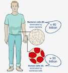

JERUSALEM e-mail: bb.rgamzon.jeru@hotmail.com
(Responsable: Jacqueline Rebibo) »
LES GERMES, LES HUMAINS ET LES CHIFFRES Combien de microbes sont-ils installés en permanence dans notre corps? Durant les dernières décennies, l’estimation généralement acceptée dans le monde scientifique est qu’il y a dix fois plus de cellules bactériennes que de cellules humaines. Or dans une recherche publiée récemment dans la revue Cell, un nouveau calcul effectué par des chercheurs de l'Institut Weizmann montre que l’adulte moyen a un peu moins de 40 000 milliards (ou 40 trillons) de cellules bactériennes, et environ 30 000 milliards (30 trillons) de cellules humaines, ce qui les met à peu près à égalité. Les bactéries logées dans le corps humain jouent un rôle important pour la santé. La composition du microbiome d’une personne,(c’est- à-dire, pour simplifier, l’ensemble des conditions écologiques de la flore intestinale)joue un rôle aussi bien dans la tendance à l’obésité que dans les réactions individuelles aux médicaments. Depuis quelques temps, certains scientifiques s’y réfèrent comme à un « second génome », et affirment qu’il faut le prendre en considération dans les traitements médicaux. L’importance croissante du microbiome dans la recherche scientifique actuelle a amené le professeur Ron Milo, le docteur Shai Fuchs et le doctorant Ron Sender, tous trois de l'Institut Weizmann, à réexaminer l’opinion généralement admise sur le rapport entre les bactéries « personnelles » et les cellules humaines. Ils ont entrepris cette recherche dans le cadre de leurs travaux pour la préparation du livre « Cell Biology by the Numbers », récemment publié par Milo avec le professeur Rob Philips du California Institute of Technology.
Comme le suggère son titre, ce livre est un recueil de connaissances acquises à la suite de calculs et d’estimations concernant les cellules vivantes. L’estimation initiale, selon laquelle, dans le corps, les cellules bactériennes sont dix fois plus nombreuses que les cellules humaines, était basée, entre autres, sur l’hypothèse qu’une bactérie moyenne est environ mille fois plus petite qu’une cellule humaine moyenne. Mais en fait, le problème est que les cellules humaines ont une grande variété de tailles, et il en est de même pour les bactéries.

Par exemple, les globules rouges sont au moins cent fois plus petits que les cellules graisseuses et que les cellules musculaires, et la taille des microbes du gros intestin est environ quatre fois celle du volume des cellules bactériennes généralement dites « cellules standard ». Les chercheurs de l'Institut Weizmann ont évalué leurs calculs en fonction du nombre des cellules humaines de différentes tailles, ainsi que celles des différentes cellules du microbiome. Ils ont aussi pondéré les résultats de leurs calculs pour connaître les quantités de bactéries « hôtes » dans différents organes du corps. Par exemple, les bactéries dans le gros intestin dominent, en termes de chiffres globaux les bactéries qui se trouvent dans tous les autres organes réunis. Le professeur Milo explique: « Il est très important de comprendre notre microbiome, et la recherche dans ce domaine fascinant est très importante pour la recherche biomédicale. Dans les sciences de la vie, qui comprennent des systèmes ‘complexes’ très dynamiques et variables, les chercheurs ont quelquefois tendance à se fier à des observations qualitatives plutôt que quantitatives. Mais faire des évaluations bien choisies en biologie cellulaire peut être un outil très puissant. Pour les chercheurs qui ont assez d’expérience pour comprendre ce que disent les chiffres, les estimations servent de « sixième sens » pour comprendre comment « vivent les cellules». LE SECTEUR DE LA CYBER-SECURITE EN ISRAEL Combinant le niveau high-tech exceptionnel d’Israël et les compétences acquises au fil des décennies sous les menaces du terrorisme, Israël a émergé en tant que leader mondial de la CYBER- SECURITÉ, classé 1er par IMD 2013. La circulation de l'information entre les militaires, l'industrie d'Israël, et les universités signifie le meilleur de la recherche et de l'inventivité sur le marché, en aidant à protéger le moteur central de l'économie moderne, l'Internet. Définissant la CYBER-SECURITÉ comme une priorité nationale, le gouvernement israélien a en outre mis en place le Bureau National de CYBER-SECURITÉ. Ce Bureau coordonne les efforts entre les militaires, l'éducation et les secteurs d'activité afin de garantir la sécurité de l'ordinateur et l’Internet, avec des implications majeures pour l'économie en général. Dans le domaine de la CYBER-SECURITÉ, des spécialistes israéliens offrent un large éventail de solutions de sécurité informatique, notamment les technologies des télécommunications, la sécurité de réseau, la transformation financière, les technologies de sécurité des données et la surveillance des communications. En 2014, plus de 220 entreprises locales aux côtés de 20 centres de R & D étrangers développent des solutions de sécurité appliquées dans le monde entier, y compris: PayPal, IBM, EMC, RSA, GE, VMware, General Electric, Cisco, Deutsche Telekom, Lockheed Martin, CA Technologies, McAfee. IBM, GE qui mettent en place des grands centres CYBER-SECURITÉ en Israël avec le recrutement de centaines d'employés locaux dans le processus. Au cours des 4 dernières années seulement, plus de 100 nouvelles entreprises de CYBER-SECURITÉ se sont développées en Israël, avec près de 400 millions de $ investis dans 78 entreprises au cours de cette période. (Source: Centre de recherche IVC). Aucune entité n’est à l'abri. L'année dernière - surnommée "L'Année de la violation de données" par les observateurs de l'industrie – des attaques de grande envergure ont eu lieux sur des sociétés comme eBay, Domino Pizza, et Home-Depot, ainsi que des institutions financières, des médias et des sites Web du gouvernement. Les dommages causés par une seule attaque peuvent atteindre des millions de dollars. Pas étonnant que les entreprises de CYBER-SECURITÉ abondent dans le monde entier. Et en second lieu seulement après les États- Unis, Israël fournit la plupart des produits pour combattre ce crime coûteux. Environ 200 entreprises israéliennes se spécialisent dans la CYBER-SECURITÉ, représentant des exportations anti-piratage d'une valeur de 3 milliards de $ en 2013. Un quart du capital-risque dans le monde est représenté par les startups de CYBER-SECURITÉ israéliennes. Commission Hasbara 1er juin 2016